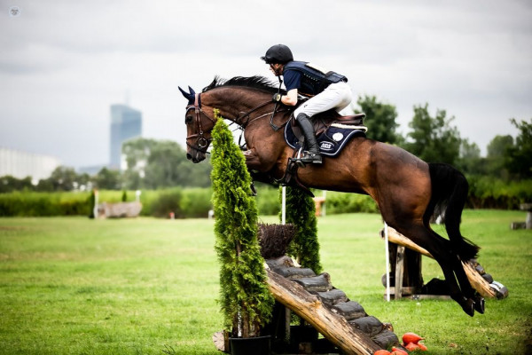

WKKW
W polsce najbardziej prestiżowe tory do wkkw znajdują się miedzy innymi w Baborówku i CSj Białym Borze. W Baborówku w 2019 były organizowane mistrostwa świata w WKKW. Na całym świecie najlepsi w WKKW są holendrzy, głównie ze względu na ich świetną hodowle koni do dużego sportu. |
 |